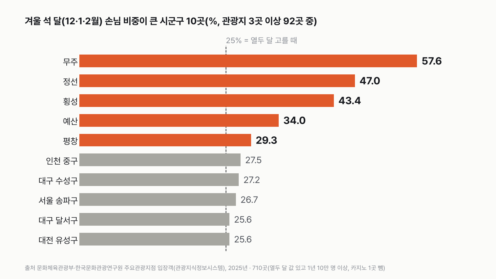
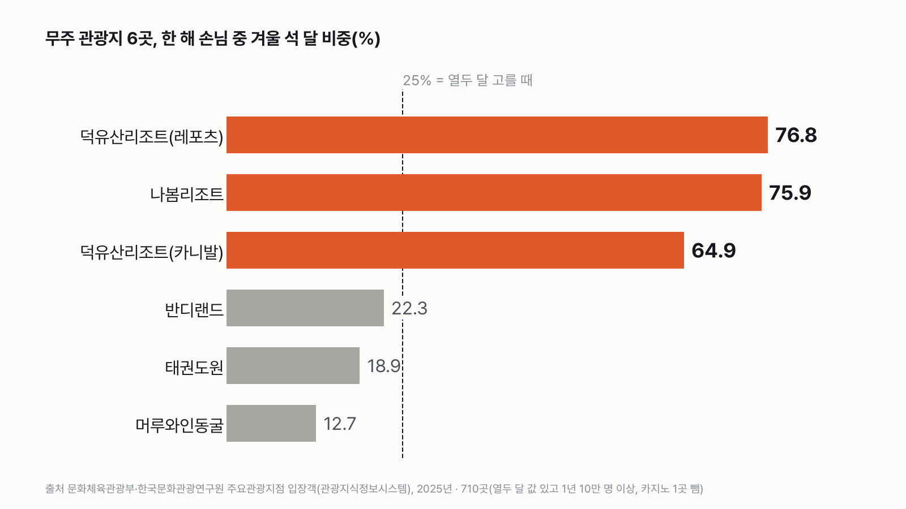
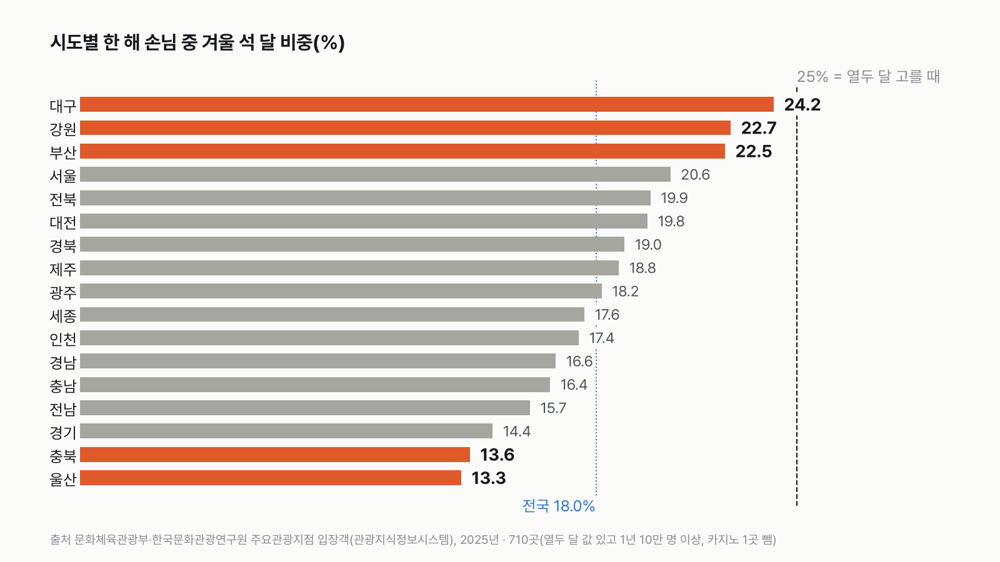

한 해 손님의 절반 넘게 겨울에 오는 군이 있어요. 어디일까?
무주에 가면 한 해 손님의 절반 넘게가 겨울에 와요. 이번 겨울 여행지를 고를 때, 그곳이 '겨울에 붐비는 동네'인지 '겨울엔 한산한 동네'인지 먼저 보고 가면 좋아요.

3줄 요약
- 전국 주요 관광지 710곳의 2025년 입장객을 시군구로 묶어, 겨울 석 달(1·2·12월)에 한 해 손님의 몇 %가 오는지 셌어요.
- 관광지가 3곳 이상인 92개 시군구 가운데 1위는 전북 무주군(57.6%)이에요. 강원 정선군(47.0%), 횡성군(43.4%)이 뒤를 이어요.
- 열두 달 손님이 고르면 겨울 석 달은 25%예요. 92곳 가운데 25%를 넘은 곳은 10곳이에요.
| 순위 | 시군구 | 관광지 수 | 겨울 석 달 비중 | 그 안에서 가장 큰 곳 |
|---|---|---|---|---|
| 1 | 전북 무주군 | 6곳 | 57.6% | 무주덕유산리조트 |
| 2 | 강원 정선군 | 3곳 | 47.0% | 하이원 스키장 |
| 3 | 강원 횡성군 | 3곳 | 43.4% | 웰리힐리파크(스키장) |
| 4 | 충남 예산군 | 6곳 | 34.0% | 세심천온천호텔(온천) |
| 5 | 강원 평창군 | 10곳 | 29.3% | 오대산국립공원(월정사) |
- 710곳을 다 합친 전국 겨울 비중은 18.0%예요.
- 위 다섯 곳 가운데 네 곳에 스키장이 있어요. 예산군은 스키장이 없어요.
무주: 겨울 손님의 91.1%가 리조트 세 곳
무주군 관광지 가운데 리조트 세 곳은 겨울 비중이 64.9~76.8%예요.
나머지 세 곳(반디랜드, 태권도원, 머루와인동굴)은 12.7~22.3%로 25%보다 낮아요.
무주의 겨울 손님을 다 더하면 148.1만 명이에요. 그 가운데 91.1%가 리조트 세 곳 손님이에요.

정선과 횡성은 스키장 한 곳이 끌어올려요
정선군에 남은 3곳 가운데 하이원 스키장의 겨울 비중은 66.0%예요. 가리왕산 케이블카는 18.6%, 화암동굴은 3.6%예요.
횡성군은 웰리힐리파크(스키장)가 98.1%예요. 함께 묶인 횡성호수길과 골프장은 10%가 안 돼요. 곳 수가 3곳뿐이라 큰 곳 하나가 동네 값을 정해요.
스키장 없는 예산군이 4위
예산군 6곳 가운데 겨울 비중이 가장 큰 곳은 수덕사(51.9%)예요. 스플라스 리솜(39.2%)과 세심천온천호텔(33.7%)이 뒤를 이어요.
수덕사는 1월과 2월에 손님이 많지만, 12월 값은 1,102명으로 아주 작아요. 달마다 세는 방법이 달랐을 수도 있어서, 수덕사 값은 조심해서 봐 주세요. 온천 이야기는 겨울 온천 글에 따로 있어요.
평창은 스키장이 있어도 29.3%
평창군은 관광지가 10곳으로 많아요. 스키장 두 곳(휘닉스파크 94.1%, 용평리조트 91.8%)은 겨울 비중이 커요.
하지만 가장 큰 곳인 오대산국립공원(월정사)은 16.9%예요. 골프장 두 곳은 0.1%예요. 여러 곳이 섞이니 동네 값은 29.3%가 됐어요.
시도로 넓히면 25%를 넘는 곳이 없어요
17개 시도 가운데 겨울 비중이 가장 큰 곳은 대구(24.2%)예요. 강원(22.7%)과 부산(22.5%)이 그다음이에요.
대구는 한 곳이 끌어올린 값이 아니에요. 19곳 가운데 손님이 가장 많은 이월드(25.2%)를 빼고 세도 23.7%예요.
가장 작은 곳은 울산(13.3%)과 충북(13.6%)이에요. 시도 단위로는 모두 25%보다 낮아요.

겨울이 가장 한산한 곳은 울릉군
순위에 넣은 시군구 가운데 겨울 비중이 가장 작은 곳은 경북 울릉군(1.2%)이에요.
울릉군 관광지 5곳의 1년 손님은 67.4만 명인데, 겨울 석 달 손님은 8,137명이에요.
숫자를 다시 보며
'무주가 겨울에 손님이 가장 많다'는 뜻은 아니에요. 이 글은 동네끼리 손님 수를 견주지 않고, 같은 동네 안에서 겨울 석 달이 한 해의 몇 %인지 견줬어요. 또 통계에 들어간 큰 관광지만 셌기 때문에, 화천 산천어축제처럼 빠진 곳도 있어요. 이번 겨울엔 붐비는 동네로 가세요, 한산한 동네로 가세요?
이 숫자는 어디서 왔나요
출처
기준일 2025년 1~12월 입장객이에요. 2026년 11월 13일에 받았어요.
| 데이터 | 출처 | 쓰임 |
|---|---|---|
| 주요관광지점 입장객 통계(월별) | 문화체육관광부·한국문화관광연구원, 관광지식정보시스템 | 시군구·시도별 겨울 비중, 무주·정선·횡성·예산·평창 관광지별 값 |
어떻게 셌나요
- 자료: 문화체육관광부·한국문화관광연구원 「주요관광지점 입장객 통계」(관광지식정보시스템), 2025년 월별 입장객(내국인 + 외국인).
- 대상: 2025년 열두 달 값이 모두 있고 1년 합계가 10만 명 이상인 711곳에서 강원랜드 카지노 1곳을 뺀 710곳.
- 겨울 석 달 비중: 시군구(또는 시도) 안 관광지들의 2025년 1·2·12월 입장객 합 ÷ 2025년 1년 합.
- 순위: 관광지가 3곳 이상인 92개 시군구만 매겼어요. 1~2곳뿐인 78개 시군구는 큰 곳 하나가 값을 정해서 순위에서 뺐어요.
- 카지노를 빼고, 3곳 이상만 순위에 넣는 기준은 값을 본 뒤에 정했어요.
| 항목 | 값 | 잰 것 / 가정 |
|---|---|---|
| 무주군 겨울 비중 | 57.6% | 잰 것 |
| 전국(710곳) 겨울 비중 | 18.0% | 잰 것 |
| 순위에 넣은 시군구 | 92곳(관광지 3곳 이상) | 가정(값 본 뒤 정함) |
| 고르게 왔을 때 석 달 비중 | 25% | 가정(3 ÷ 12) |
한계 6가지
이 데이터로 말할 수 없는 것
- 통계에 들어간 관광지만 셌어요. 한 동네의 모든 손님이 아니에요.
- 관광지마다 세는 방법(표 판매, 계측기, 추정)이 달라요. 그래서 동네끼리 손님 수는 견주지 않았어요.
- 겨울 석 달은 같은 해(2025년) 1·2·12월이에요. 2024년 12월을 넣으면 값이 조금 달라져요.
- 수덕사는 12월 값(1,102명)이 1월·2월보다 아주 작아요. 집계가 빠졌을 수 있어요.
- 화천군은 710곳에 한 곳도 없어요. 태백·홍천·인제는 1곳씩뿐이라 순위에서 빠졌어요.
- 왜 겨울에 손님이 늘거나 줄었는지는 이 통계에 없어요.
새 글 나오면 받아 보기
피드 리더 앱에 이 사이트 주소를 한 번 넣어 두면, 새 글이 올라올 때 앱에 떠요. 가입이나 메일 주소는 필요 없어요.
받는 법 보기
- 피드 리더 앱을 하나 골라요. 새 글을 모아 보여 주는 앱이에요. 예를 들면 Feedly나 Inoreader가 있어요. 둘 다 무료고 웹·휴대폰에서 써요.
- 앱에서 '구독 추가'(+)를 누르고 아래 주소를 붙여 넣어요.
- 끝이에요. 새 글이 올라오면 앱 목록에 떠요.
https://protofu.github.io/opendata-insight/feed.xmlFeedly를 쓴다면 여기를 눌러 바로 추가할 수도 있어요.